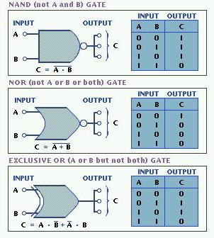

AND begat NAND, OR begat NOR, and NOT was added to every lc. Composite gates are composed of multiple common gates strung together logically. Composite gates also have their own written symbols because it would be very tedious to draw a full adder, which you will learn in a later lesson. Composite gates are more complex than common gates but are still relatively simple, compared to a full adder lc.
Like the chart in Lesson 2, the written form of the composite gate is on the left and the input-output combinations are on the right. In the next lesson, "Lesson 4: Half Adders," you will begin to see how composite gates are strung together logically, like common gates, to form half adders, and two half adders make up a whole adder.